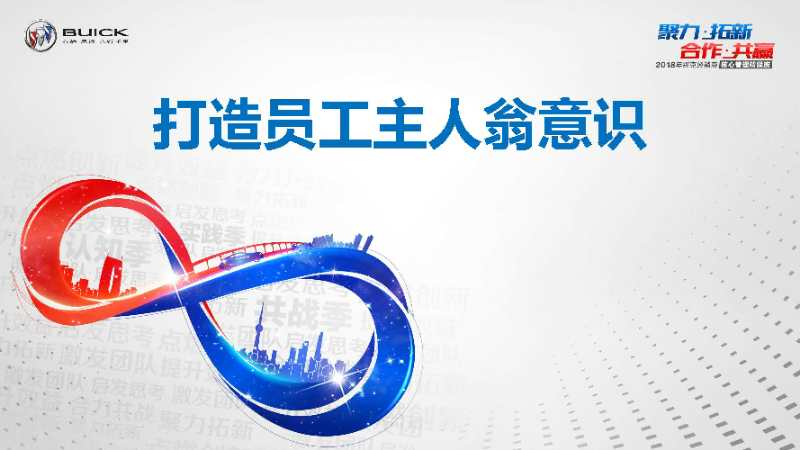
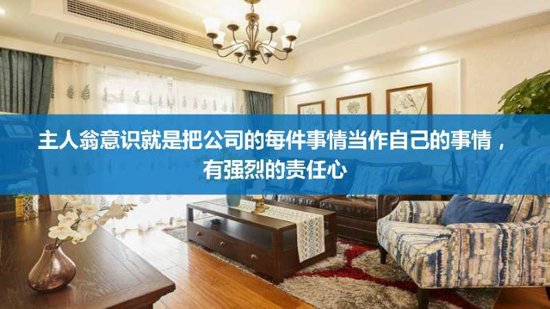
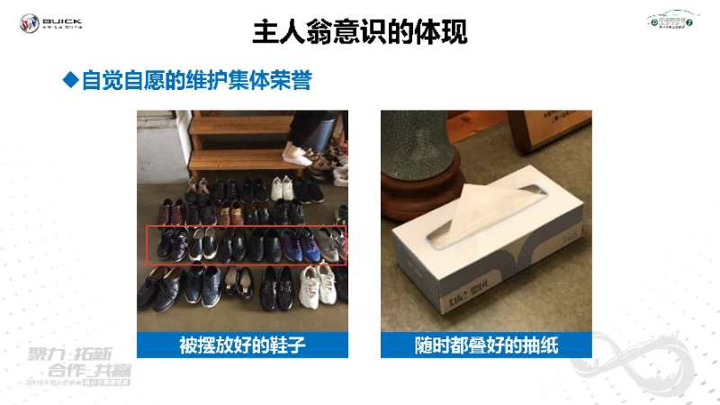
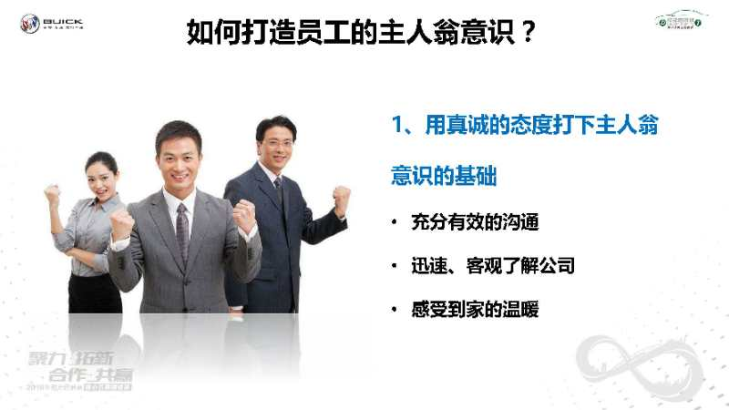
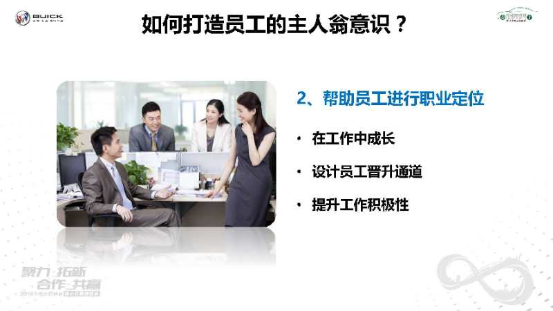
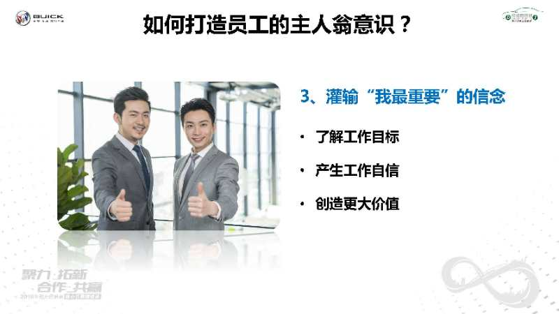
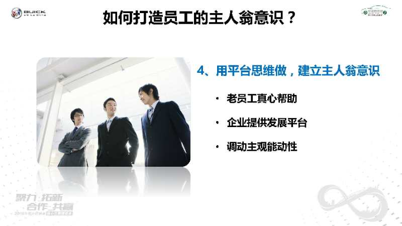
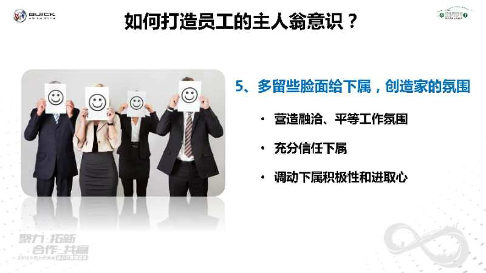

17"
各位别克经销商的小伙伴们，大家好，欢迎各位收听2018年别克核心管理精锐班第一季——苏州德胜阳楼参访回顾课程，我们今天分享的课题是：打造员工的主人翁意识。

35"
什么是主人翁意识呢？我们可以通过举一个简单的案例来理解一下，当一个朋友来自己家里做客，我们就是主人，我们会主动跟客人约定好见面的时间，礼貌的邀请朋友进门，准备拖鞋、茶水或饮品，在朋友做客期间尽可能的让他感到愉悦、开心，送客人出门，并且在朋友离去后收拾房间。而我们做的这些，不需要有人来提醒，我们会下意识的去遵照这样的标准，这就是主人翁意识。
30"
在企业管理里面，主人翁意识就是自己把这个公司的每件事情当作自己的事情，有强烈的责任心。如果明白主人翁意识的重要性，就要把它作为一种信念植入员工的头脑，让员工将公司当做自己的家，把公司的利益与自己的利益合为一体，才会毫无保留地发挥主观能动性，更好地为公司工作。

31"
在德胜阳楼的参访过程中，我们就强烈的体验到了德胜阳楼员工所表现出来的主人翁意识：当我们脱鞋参观样板间，出来后会看到鞋子已经整齐的摆放在门口；当我们用过纸巾，会有人随时将纸巾折成三角形便于抽取；这些事情不用特意安排，不论是哪一个人看到了，都会主动的去做，这些就是德胜阳楼员工主人翁意识的体现。
18"
在日常展厅管理中，如果员工有主人翁意识，有很强的主动意识，很多管理的难点会变得很容易，比如说谁来倒茶水，谁来收拾客户走后留下的水杯和摆放桌椅，展车的卫生等等……
43"
而现在，我们很多的员工都认为自己只是一个打工者，打工者和主人翁之间在心态上有着明显的区别：打工者会紧盯报酬，会有“我为别人做事，别人给我工资”、“尽量少做事，想办法多挣钱”、“遇事躲着走，能少干就少干”的心态；而一个有主人翁意识的员工，他会先工作后报酬，“见工作就干，不管份内还是分外”、“有困难就上，不管报酬高与低”；当一个企业拥有主人翁意识的员工越多，那么这个企业也就越健康，管理效率也就越高。

44"
那么该如何打造员工的主人翁意识呢？可以从以下5点做起 1、用真诚的态度打下主人翁意识的基础 管理者要与员工就其关心的问题进行充分有效的沟通，将公司的实际情况如实相告，帮助他们迅速、客观的了解公司，融入公司，消除担心与顾虑。只有用这种真诚的态度，才能让员工真正感受到家的温暖，愿意成为公司的一份子，与公司同呼吸共命运。比如：随时了解员工的工作状态，管理者每天都能够跟1名员工面对面的沟通谈心。

43"
2、帮助员工进行职业定位 让员工在工作中成长，实现自我价值，是让员工建立对公司归属感的关键一步。如果该下属在你的手下做得不快乐，事事不顺利，整天想着逃离，他是不可能产生主人翁意识的，更谈不上工作的积极性了。举个例子，公司要设计员工的晋升通道，从一线员工到管理岗位，销售顾问同样也可以分级晋升，到达金牌的销售顾问可享受主管待遇等等，这样，才能让员工不会太早的出现厌倦期，让员工更有积极性。

45"
3、灌输“我最重要”的信念 让员工明白，他是可以改变一个部门，乃至整个公司困境的人。只要他愿意，并坚决执行你的决策，他创造的价值就无穷大，让他明白自己对于公司的价值，产生工作自信。只有这样，员工才会和你站在同一个立场，守卫同一个战壕，积极地执行你的工作安排，从而节省掉那些巨大的、无谓的管理成本。比如让销售顾问参加公司的月会，让销售顾问了解公司目前的节奏以及为什么会给他们那些工作指标，让他们参与讨论，他们在执行的过程中就会更积极。

47"
4、用平台思维做，建立主人翁意识 我们知道“带员工”不是一个人的事，不仅需要老员工的真心帮助，也需要企业给予足够的重视，不能只注重为员工提供“拐杖”，更重要的是为员工提供发展的“平台”。对于一些新员工来说，进入企业后，老员工要多给新员工提供实现其个人价值和平台的机会，不要大事小事都干预，多给新员工独立思考、独立锻炼的机会。人在没有依靠、没有退路的情况下，会用尽全力调动自己的主观能动性，这样才会进步得更快。

31"
5、多留些脸面给下属，创造家的氛围 之前听一个朋友说“每次上班，从我走进办公室的第一秒钟开始，就感觉背后多了一双眼睛。不管我做什么，他都像扫描雷达一样盯着我，不放过我任何一个动作。监督着我、审视着我、评价着我……我都不知道这一天是怎么熬下来的，太可怕了！”这可以体现出他的领导一定很糟糕。
41"
优秀的管理者应该努力营造一种融洽、平等以及有限自由的工作氛围，给足下属面子，别像膏药一样贴在员工的后背上。另一方面，在实际工作中，人们不犯错误几乎是不可能的，你应该充分信任你的下属，当下属犯了错误，不要只是一味地批评，以免挫伤员工的积极性。如果宽容地原谅下属的错误，则能够很好地调动下属的积极性和进取心。要知道，给下属面子，就是给自己面子；帮助下属，就是帮助自己。
18"
当员工有了主人翁意识后，做为管理者，我们要做的就是明确告知那些需要大家共同维护的事情，和所有的员工一起，维护好这个大家庭。 今天的课程到此结束，感谢大家的聆听，我们下次再见。